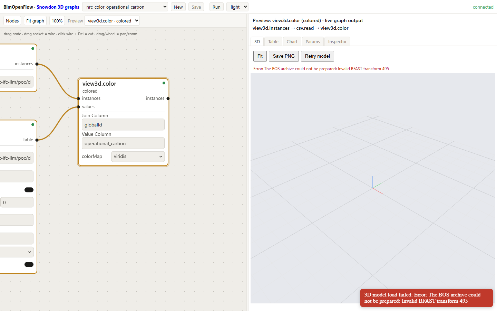

NRC Publications Archive / Archives des publications du CNRC
Storing, displaying, and querying building analytics on IFC models with a large language model agent layer
Diggins, Christopher
This publication could be one of several versions: author's original, accepted manuscript or the publisher's version. / La version de cette publication peut être l'une des suivantes : la version prépublication de l'auteur, la version acceptée du manuscrit ou la version de l'éditeur.
For the publisher's version, please access the DOI link below. / Pour consulter la version de l'éditeur, utilisez le lien DOI ci-dessous.
Publisher's version / Version de l'éditeur: https://doi.org/[to be assigned]
NRC Publications Record / Notice d'Archives des publications de CNRC: https://nrc-publications.canada.ca/eng/view/object/?id=[to be assigned]
Access and use of this website and the material on it are subject to the Terms and Conditions set forth at https://nrc-publications.canada.ca/eng/copyright
L'accès à ce site Web et l'utilisation de son contenu sont assujettis aux conditions présentées dans le site https://nrc-publications.canada.ca/fra/droits
Questions? Contact the NRC Publications Archive team at PublicationsArchive-ArchivesPublications@nrc-cnrc.gc.ca.
Christopher Diggins
Ara 3D / Studio 2.5
Prepared for the National Research Council of Canada
CONSTRUCTION
Report No. A1-XXXXXX.X
Report Date: 2026-09-19
Contract No. [to be assigned]
Agreement date: [to be assigned]
Program: Construction Sector Digitalization and Productivity
Author
Christopher Diggins Ara 3D / Studio 2.5
Approved
[Approver name] Program Leader
| Report No. | A1-XXXXXX.X |
| Report Date | 2026-09-19 |
| Contract No. | [to be assigned] |
| Agreement date | [to be assigned] |
| Program | Construction Sector Digitalization and Productivity |
| Pages | [to be completed] |
This report may not be reproduced in whole or in part without the written consent of the National Research Council of Canada and the Client.
(This page is intentionally left blank)
Executive Summary
1 Background information 2 Scope 3 Who should use this report 4 Definitions and abbreviations 5 Storage of analytics within IFC 6 Display of analytics on IFC geometry 7 The large language model and agent layer 8 Proof of concept and results 9 Limitations 10 Future directions 11 Roadmap for an open bidirectional viewer 12 Conclusions References Annex A Property-set definitions Annex B Rule file schema Annex C Agent tool surface Annex D Proof-of-concept gap report
Figure 1 Embodied and operational carbon per storey, drawn as a bar chart by a chart.bar node
Figure 2 The same storey aggregates rendered in the Table tab of the dataflow editor
Figure 3 The property values submitted to the byte-exact writer, one row per IFCPROPERTYSINGLEVALUE
Figure 4 duplex-enriched.ifc coloured by operational carbon through a viridis gradient
Figure 5 The same model coloured by embodied carbon, stages A1 to A3
Figure 6 The Category column rendered through a categorical palette, nine categories
Figure 7 Rule DC-W1 verdicts coloured on the 14 doors of the model
Figure 8 The verdict table produced by the check.rule node
Figure 9 The property sets of a picked wall, listed beneath the 3D view
Figure 10 Elements per storey obtained from the StoreyOfEntity view
Figure 11 Snowdon Towers, 456,598 instances, coloured by category
Figure 12 The Snowdon Towers door schedule, 142 doors, built from two duck.query nodes
Figure 13 The door-clearance pipeline: code provision, machine-readable rule, and verdict records
Figure 14 The 3D pane rejecting the Duplex model before the converter and loader were corrected
Table 1 Definitions used in this report
Table 2 Abbreviations used in this report
Table 3 Twelve mechanisms available within IFC 4.3 for carrying analytics
Table 4 Comparison of the twelve mechanisms on four properties
Table 5 Viewers and libraries considered, with the one row obtained from the test kit
Table 6 Model, data, and toolchain of the proof of concept
Table 7 Enrichment counts for case study A
Table 8 Case study A, hand-driven session of 2026-09-17: expected against returned
Table 9 Case study A, unattended gpt-5 run of 2026-09-18: expected against returned
Table 10 The four door-clearance provisions modelled in case study B
Table 11 Verdict totals for case study B, 14 doors by 4 rules
Table 12 Operations a bidirectional viewer should expose
This work was undertaken for the National Research Council of Canada under the Construction Sector Digitalization and Productivity program. The author thanks the NRC project team for the statement of work that framed the three objectives addressed here, and for the Information Delivery Specification framework that shaped the storage recommendation in Section 5.
The proof of concept is built on the open-source BIM Open Toolkit, released under the MIT licence by Ara 3D. The buildingSMART Duplex Apartment model and the Karlsruhe Institute of Technology reference models were used as public test data.
This report has been prepared under the Construction Sector Digitalization and Productivity program of the National Research Council of Canada. It is based on the best knowledge available at the time of publication. The analytics values reported in case study A are synthetic and are identified as such wherever they appear; they are not measured results and are not fit for any assessment purpose. The code citations in the rule file of case study B are illustrative paraphrases and are not reproductions of legal text; they have not been reviewed by a code authority. Neither the National Research Council of Canada nor the author accepts liability for any use made of the information contained in this report.
Building performance analytics such as embodied carbon, operational carbon, and energy use intensity are ordinarily computed by tools that sit outside the building information model, and the results are delivered as spreadsheets and reports that cannot be joined back to the geometry, cannot be validated against an information requirement, and cannot be interrogated in plain language. This report addresses three connected questions for openBIM workflows built on the Industry Foundation Classes (IFC) [1]: where analytics should be stored so that they travel with the model, how they should be displayed on the geometry, and how a large language model (LLM) can be placed in front of an enriched model so that it may be queried in natural language. The three questions correspond to the three objectives of the statement of work [20], and the report is organised around them.
Twelve storage mechanisms available within the IFC 4.3 schema were compared on portability, queryability, interoperability, and scalability, and a three-layer approach is recommended: scalar summary values held in custom property sets at element, space, storey, and building level; a reference from the IFC file to a richer external columnar dataset joined on GlobalId; and a metric dictionary that fixes names, units, and lifecycle stages so that queries resolve reliably. Display techniques and openly available viewers were surveyed, and colour mapping driven by the same tables in which the analytics are stored is recommended, with aggregated views alongside. For the query layer, it is recommended that the raw IFC file not be given to the language model, and that a small typed read-only tool surface be exposed over the Model Context Protocol (MCP) [7] instead. An implementation is described that converts IFC to the columnar BIM Open Schema, loads it into DuckDB, exposes 29 tools, and provides a dataflow graph in which the agent constructs queries, colourings, and rule checks with the same four editing operations a person uses.
The proof of concept was carried out on the buildingSMART Duplex Apartment model, 38,898 STEP entities, in two case studies. In case study B, executed 2026-08-04 and independently re-run 2026-08-05, a rule checker driven by a machine-readable provision file evaluated four accessible-door-clearance rules over 14 doors, produced 56 verdicts in all four verdict categories with per-element evidence, matched an independently derived ground truth door by door, produced byte-identical output across repeated runs, and recorded a human override inside the IFC file in a form that can be removed to restore the original byte for byte. In case study A, executed 2026-09-17, the same model was enriched with synthetic carbon and energy analytics, 664 property sets and 2,438 typed values written byte-exactly and reversibly, and eight natural-language questions were answered at building, storey, component, category, provenance, and absence level through the tool surface; seven of the eight matched the independently computed expectation in the hand-driven session, and four of the eight matched in the unattended gpt-5 run of 2026-09-18. Three of the four unattended misses share a single cause, namely that the storey and building aggregates carry the same property names as the element values, which is a finding about the storage recommendation rather than about the agent, and which Annex A should accordingly be revised to correct.
The National Research Council of Canada (NRC) produces analytics on building models: operational carbon, embodied carbon, energy use, and related performance indicators. These are computed by simulation and life-cycle assessment tools whose inputs may be derived from an IFC model but whose outputs are not written back to it. The numbers reside in the tools' own databases, in CSV exports, and in PDF reports.
Three activities become difficult once the results have left the model. The results cannot readily be shown, because a designer who opens the model and looks for the walls carrying the most embodied carbon will not find them there. The results cannot readily be reused, because a downstream tool, or a later project phase, is unable to locate them without the original tool and its project file, and there is no standard place to look. And the results cannot readily be interrogated, because a question such as "what is the total operational carbon on Level 2" or "which doors fail the clearance rule" requires a person who understands both the analysis tool and the model.
Mechanisms that could hold these results are already present in the IFC schema [1]. The Information Delivery Specification (IDS) [2] can state which results a delivered model is required to carry. Large language models can turn a question into a query. None of these components is new. What is absent is a settled practice for combining them, and the obvious combination, in which the language model is handed the IFC file directly, does not work at the scale of real models, for the reasons given in Section 7.1.
The statement of work [20] sets three objectives and a publication, and the work reported here is organised around them. The storage objective asks which IFC mechanisms should carry analytics, at component, zone, storey, and building level, so that the data is portable, reusable, and queryable; it is addressed in Section 5. The display objective asks how analytics should be shown on IFC geometry, and which freely available viewers and libraries support this; it is addressed in Section 6. The query objective asks how an LLM-based layer should be built so that it answers natural-language questions about an enriched model correctly, and so that its answers may be checked; it is addressed in Section 7. The evidence for all three is reported in Section 8.
Five contributions are offered. The first is a comparison of twelve storage mechanisms available within IFC 4.3, ranked on portability, queryability, interoperability, and scalability, with a three-layer recommendation and concrete property-set definitions (Section 5, Annex A). The second is an argument, supported by an implementation, that the language model should be placed behind a small typed read-only tool surface over a columnar copy of the model rather than reading the IFC file, together with a description of that surface (Section 7, Annex C). The third is a byte-exact write-back path for property sets, by which analytics, verdicts, and human overrides may be added to a client's IFC file without altering any byte the writer did not intend to change (Sections 5.5 and 8.3). The fourth is an executed and reproducible demonstration on a public model, comprising a machine-readable provision file, a checker, four verdict categories, independently derived ground truth, hash-verified determinism, and a reversible override recorded in the IFC (Section 8). The fifth is a roadmap for an open bidirectional viewer in which selection, colouring, viewpoints, and write-back are operations an agent may call (Section 11).
This report covers the storage, display, and querying of previously computed analytics on IFC models, and the design of an agent layer that answers natural-language questions about such models. It reports two executed case studies on one public model and states what those studies establish and what they do not.
The following are not in the scope of this report. Geometry authoring is excluded. The computation of the analytics themselves is excluded; the report is concerned with what happens to a result after an analysis tool has produced it. The proof of concept is a minimal one and is neither a production viewer, nor a certified compliance checker, nor a replacement for the client's analysis tools. The models used are public samples, and the analytics of case study A are synthetic; NRC's own models and analytics datasets, once supplied, are expected to be used to repeat the runs reported in Section 8. The rule file of case study B expresses provisions modelled on the National Building Code of Canada 2020 [6], but its citations are illustrative paraphrases rather than legal text, and no statement in this report should be read as a determination of code compliance.
This report is intended for building performance analysts, BIM managers, building envelope and energy consultants, and software developers working on openBIM tooling, as well as for researchers and for the NRC staff responsible for the Information Delivery Specification framework. The reader is assumed to be familiar with building information modelling in general terms, and with the idea of exchanging models as files, but not with the internal structure of IFC, with IDS, or with the Model Context Protocol. Section 4 defines the terms used throughout, and Section 4.2 gives the minimum technical background needed to follow Sections 5 to 8.
Readers who require only the recommendations should read Sections 5.6, 6.4, and 7.6, each of which states its section's recommendation as a short numbered list. Readers concerned with the evidence should read Section 8 together with Annex D, which records what the executed run did not cover. Readers concerned with what should be built next should read Sections 10 and 11.
Table 1 Definitions used in this report.
| Term | Definition |
|---|---|
| Analytics value | A number describing an element or a spatial container, produced by an analysis tool, together with the metric, unit, lifecycle stage, scenario, and run that give it meaning. |
| Byte-exact write | An addition to an IFC file performed by appending entities to the original bytes, such that every byte the writer did not intend to change is preserved. |
| Enriched model | An IFC file into which analytics values have been written as property sets. |
| Lifecycle stage | The stage of the building lifecycle to which an environmental result applies, expressed in the notation of EN 15978:2011 [5], for example A1 to A3. |
| Metric dictionary | A versioned list of metric identifiers that fixes the name, unit, and lifecycle basis of each metric, and to which property names and dataset columns are mapped. |
| Property set | A named group of properties attached to one or more IFC objects through a relationship, the mechanism described in Section 4.2. |
| Provenance | The record of which run, tool, method, person, and date produced a value. |
| Run record | An immutable record of one evaluation of a dataflow graph, pinning the graph hash and every input by content hash. |
| Tool surface | The set of typed functions a language model is permitted to call, together with their signatures and their results. |
| Verdict | The outcome of evaluating one rule against one element, taking one of four values as defined in Section 7.5. |
Table 2 Abbreviations used in this report.
| Abbreviation | Expansion |
|---|---|
| AABB | Axis-aligned bounding box |
| BCF | BIM Collaboration Format |
| BIM | Building information modelling |
| BOS | BIM Open Schema |
| BOT | Building Topology Ontology |
| CSV | Comma-separated values |
| EUI | Energy use intensity |
| IDS | Information Delivery Specification |
| IFC | Industry Foundation Classes |
| LBD | Linked Building Data |
| LCA | Life-cycle assessment |
| LLM | Large language model |
| MCP | Model Context Protocol |
| NBC | National Building Code of Canada |
| NRC | National Research Council of Canada |
| RDF | Resource Description Framework |
| SPARQL | SPARQL Protocol and RDF Query Language |
| SQL | Structured Query Language |
| STEP | Standard for the Exchange of Product model data |
This subsection gives the minimum needed to follow the remainder of the report. Readers already familiar with IFC, IDS, and MCP may proceed to Section 5.
IFC and its property mechanisms. IFC is an ISO standard schema for building information, ISO 16739-1:2024 [1], most often exchanged as STEP Physical Files with the extension .ifc. A file is a list of numbered entities. Each building element is an entity such as IFCDOOR or IFCWALL, carrying a GlobalId that is intended to be stable across exports and tools, and elements are placed in a spatial hierarchy of project, site, building, storey, and space through IFCRELCONTAINEDINSPATIALSTRUCTURE. Several mechanisms exist for attaching data to an element, and Section 5.2 compares them; the one that matters most here is the property set. A property set (IFCPROPERTYSET) is a named group of properties, a single-value property (IFCPROPERTYSINGLEVALUE) carries a name, a typed value, and an optional unit, and a relationship (IFCRELDEFINESBYPROPERTIES) attaches the set to one or more elements. Standard sets are prefixed Pset_, and custom sets may be defined by anyone.
Three consequences of this arrangement shape everything that follows. The first is that property names are effectively the schema: two tools that both write a property named EmbodiedCarbon may nonetheless disagree on units, lifecycle stage, and method, so that portability of the file does not confer portability of the meaning. The second is that the file is a text serialisation of an object graph, so that reading any single fact requires parsing the whole file; the Duplex Apartment model used in this report contains 38,898 entities, and larger buildings run to millions. The third is that writing is fragile, because most IFC libraries load the file into their own object model and re-serialise it, which changes entity numbering, formatting, and on occasion content, leaving a client who receives an enriched file that differs everywhere from the one they sent with no straightforward way to establish what changed.
Information Delivery Specification. IDS is a buildingSMART standard, IDS 1.0 of June 2024 [2], for machine-readable information requirements. An IDS file states, for a class of objects termed its applicability, what those objects are required to contain, termed its requirements: a property with a certain name and permitted values, a classification, a material, or an attribute. Validators check an IFC file against an IDS and report a pass or a fail for each element. IDS is relevant to this work in two respects. NRC already maintains an IDS framework, so any property set recommended here should be one that an IDS is able to require. Further, the applicability-plus-requirements shape of an IDS specification is the same shape as a code-compliance rule, a correspondence that Section 8.3 exploits. A longer introduction to IDS is given in the repository [22].
Linked data and IFC-LBD. The Linked Building Data community expresses building information as RDF graphs, using ontologies such as the Building Topology Ontology (BOT) [4] and mappings from IFC. This representation is well suited to joining building data with other graphs and to reasoning over the result. It is included in the storage comparison of Section 5.2 and treated as a future extension in Section 10.3, because the client's current workflow is file-based and the tooling for Linked Building Data is less mature than that available for IFC files and columnar tables.
Large language models as query interfaces. A language model is able to turn a natural-language question into a structured query, but it has no reliable means of reading a 40,000-entity STEP file. Practical systems therefore give the model tools, that is, functions it may call, with typed arguments and results, which perform the reading. The Model Context Protocol (MCP) [7] is an open standard for describing such tools and calling them over a stream, so that any MCP-capable client may use a server written once. A survey of seven IFC MCP servers extant in mid-2026 [24] found three patterns: fixed query functions over one loaded file; a generic selector combined with a generic edit operation; and arbitrary Python execution through IfcOpenShell [10] or Blender. None of the seven provided persistent element sets, joins with external tables, or analytics written back into the file, and Section 7 describes the design adopted here in that light.
BIM Open Schema and the toolkit used. The proof of concept is built on the open-source BIM Open Toolkit [8], released under the MIT licence, of which two parts are used. BIM Open Schema (BOS) [9] is a columnar representation of a building model, with one table each for entities, parameters, relations, and geometry, and with strings and numbers pooled; parameters are stored entity-attribute-value, one table per primitive type, and relations use a closed vocabulary (PartOf, ContainedIn, HostedBy, BoundedBy) that covers both IFC and the Revit API. A .bos file is a zip archive of Parquet [17] tables and loads directly into DuckDB [16], and a converter turns an IFC file into BOS in a single pass. BimOpenFlow is a dataflow graph over those tables, in which nodes are small pure functions from tables to tables, a graph is a JSON document, and four operations (addNode, connect, setParam, removeNode) back the HTTP API, the MCP tools, and every gesture in the web editor; nodes that write files, including the node that writes property sets into IFC, run only inside an explicit run, and each run records the graph hash and every input by content hash.
The toolkit further contains a byte-exact IFC editing library, Ara3D.Ifc.Editing [29], which locates entities by byte range in the source file and writes additions as an appended patch, so that every byte the writer did not touch is preserved. This library is the basis of the write-back path described in Sections 5.5 and 8.3.
This section addresses the first objective of the statement of work, namely where analytics should reside so that they are portable, reusable, and queryable at component, zone, storey, and building level. It condenses the longer options brief [21].
An analytics value is more than a number. To be reusable it requires, at minimum, the element or spatial container it describes, identified by GlobalId; the metric, such as embodied carbon or energy use intensity; the unit; the lifecycle stage or time basis, such as A1 to A3, A1 to A5, or annual; the scenario, such as baseline or retrofit option 2; and the run that produced it, with the tool, method, and date.
Each candidate mechanism is judged on how much of this it is able to carry, and on four properties. Portability is whether the value travels with the file. Queryability is whether a tool or a language model is able to find it without special knowledge. Interoperability is whether other IFC tools read it. Scalability is whether the mechanism still works for thousands of metrics, many scenarios, or time series.
The options brief [21] examines twelve mechanisms, which are summarised in Table 3; the brief gives the IFC entity references and a fuller discussion of each.
Table 3 Twelve mechanisms available within IFC 4.3 for carrying analytics.
| # | Mechanism | IFC basis | Best suited to |
|---|---|---|---|
| 1 | Custom property sets | IfcPropertySet on elements and containers |
Summary values for display and query |
| 2 | Standard environmental property sets | Pset_EnvironmentalImpactIndicators and related |
Standards-aligned LCA fields |
| 3 | Element quantities | IfcElementQuantity |
Takeoff inputs such as areas and volumes |
| 4 | Material properties | IfcMaterialProperties |
Carbon factors and EPD data per material |
| 5 | Spatial aggregates | Property sets on space, storey, building | Dashboards and roll-ups |
| 6 | External dataset reference | IfcDocumentReference with a join key |
Full analytics tables and time series |
| 7 | Library references | IfcLibraryInformation |
Reusable metric definitions |
| 8 | Classification references | IfcClassificationReference, bsDD |
Semantic tagging of metrics |
| 9 | Performance history | IfcPerformanceHistory |
Operational, time-based performance |
| 10 | Constraints and metrics | IfcMetric, IfcObjective, IfcConstraint |
Targets and pass or fail |
| 11 | Visualisation metadata | Colour and legend properties | Presentation hints |
| 12 | Custom schema extension | New entity types | Research; not portable |
Two of the twelve are distinguished from the rest. Mechanism 1 is the simplest and the most widely readable, in that almost every IFC viewer displays property sets and "colour every element by property X" is a standard viewer feature. Mechanism 6 is the only one that scales, in that an external Parquet or DuckDB table holds millions of rows without inflating the IFC file while the IFC retains a pointer and a join key. The remainder are refinements that add meaning (7, 8, 10), cover a special case (3, 4, 9), or should be avoided in a portability-first project (12).
Table 4 scores the mechanisms on the four properties defined in Section 5.1. Portability is scored on whether the value is inside the .ifc file. Queryability is scored on whether a generic IFC parser, or a language model with generic tools, is able to find it by name. Interoperability is scored on how many existing viewers and checkers understand the mechanism.
Table 4 Comparison of the twelve mechanisms on four properties.
| Mechanism | Portability | Queryability | Interoperability | Scalability |
|---|---|---|---|---|
| Custom property sets | High | High | Medium to high | Medium |
| Standard environmental property sets | High | High | Medium | Medium |
| Element quantities | High | High | High | Medium |
| Material properties | High | Medium | Medium | High |
| Spatial aggregates | High | High | Medium | High |
| External dataset reference | Medium | Very high | Medium | Very high |
| Library and classification references | Medium | Medium | Medium to high | High |
IfcPerformanceHistory |
Medium | Medium | Low to medium | Medium |
| Constraints, objectives, metrics | Medium | Medium | Low to medium | Medium |
| Custom schema extension | Low | High with custom tools | Low | Medium |
As Table 4 shows, no single mechanism satisfies all four properties. Accordingly, it is recommended that three be used together, each performing the function for which it is best suited.
Layer 1: summary values in custom property sets. It is recommended that the scalar values which people inspect, filter by, colour by, and ask about be written directly into property sets on elements and on spatial containers. One set per topic should be used, so that a viewer's property panel remains readable and an IDS is able to require the topic as a unit:
Pset_NRCEmbodiedCarbon
Pset_NRCOperationalCarbon
Pset_NRCEnergyPerformance
Pset_NRCAnalyticsProvenance
Every set carries ScenarioName and AnalysisRunId, so that a value can never be separated from the run that produced it. Units and lifecycle stages are carried in the property names, as in EmbodiedCarbon_A1A3_kgCO2e, so that the meaning survives tools which drop the IFC unit assignment. Annex A gives the full definitions. It should be noted that the aggregate sets written on storeys and on the building currently share the element property names, an arrangement which the unattended run of Section 8.2 showed to be a defect; the correction is stated in Section 9.2.
Layer 2: a reference to the full dataset. It is recommended that an IfcDocumentReference be attached to the project, or to the building, naming the external result table, its format, its checksum, and the join key. The external table should be long-format, one row per combination of run, element, and metric, so that new metrics never require a schema change:
AnalysisRunId, GlobalId, IfcClass, MetricId, MetricName, Value, Unit,
LifecycleStage, Scenario, Source, Confidence, ComputationMethod
Parquet [17] is the recommended format, being columnar, compressed, typed, and loadable into DuckDB, pandas, and every lakehouse tool. CSV is acceptable for small datasets and for human inspection.
Layer 3: a metric dictionary. It is recommended that a short list of metric identifiers be defined, and that each property name in Layer 1 and each MetricId in Layer 2 be mapped to one of them:
NRC.EC.A1A3.TOTAL Embodied carbon, stages A1 to A3, kgCO2e
NRC.EC.A1A5.TOTAL Embodied carbon, stages A1 to A5, kgCO2e
NRC.OC.ANNUAL Operational carbon, kgCO2e per year
NRC.EUI.ANNUAL Energy use intensity, kWh per m2 per year
NRC.GWP.MATERIAL_FACTOR Global warming potential factor per material unit
The dictionary may be published as an IFC library reference, as a bsDD domain, or simply as a versioned JSON file shipped with the IDS. Its purpose is to give the query layer of Section 7 one place in which to resolve a term such as "carbon" to a column, and to give an IDS one vocabulary to require.
Layer 1 requires writing into a client's IFC file, and Section 4.2 noted that most libraries re-serialise the whole file. The toolkit's editing library [29] instead treats the source file as bytes, finds the highest entity identifier and the owner-history entity, and appends new entities. For one element and one property set it emits N IFCPROPERTYSINGLEVALUE lines, one IFCPROPERTYSET, and one IFCRELDEFINESBYPROPERTIES. The GlobalId of each new entity is a deterministic hash of a caller-supplied key, so that running the writer twice produces the same bytes.
var original = IfcSourceFile.Load(sourcePath);
var builder = new IfcPropertySetBuilder(
original.MaxId + 1,
original.FirstIdOfType("IFCOWNERHISTORY"));
builder.AddPropertySet(wall.Id, "Pset_NRCEmbodiedCarbon",
new[]
{
IfcPropertyValue.Real("EmbodiedCarbon_A1A3_kgCO2e", 412.7),
IfcPropertyValue.Label("ScenarioName", "Baseline"),
IfcPropertyValue.Label("AnalysisRunId", "run-2026-07-14-01"),
},
guidKey: $"analytics:{wall.GlobalId}:Pset_NRCEmbodiedCarbon");
File.WriteAllBytes(targetPath, IfcPatcher.Append(original, builder.Lines));
An entity-level diff, IfcDiff.Compare, then reports exactly which entities were added, and IfcPatcher.Remove removes them again. Section 8.3 reports this round trip verified byte for byte on the Duplex model. The same path is exposed as the sink.writePsets node in the dataflow graph, where it runs only inside an explicit run.
The practical consequence for NRC is that an enriched file may be returned to a model author together with a diff that lists the additions and nothing else, and that the author is able to strip the additions and recover the original file exactly.
In summary, it is recommended that six measures be adopted for the storage of analytics:
IfcDocumentReference, joined on GlobalId and stored as Parquet;Measures 1, 3, and 5 are implemented and tested in the toolkit. Measure 4 is a document. Measure 6 remains future work and is discussed in Section 10.2.
This section addresses the second objective of the statement of work, namely how analytics should be shown on IFC geometry and what freely available software supports this. The viewer inventory [23] lists the candidates, and this section selects among them.
It should be noted that every figure in this section was captured on 2026-09-18 by the toolkit's walkthrough script, scripts/nrc-walkthrough.mjs at toolkit commit 66df499, from the seeded graphs in samples/nrc-analyses; the captures and their captions are indexed in the walkthrough index of the repository. The 3D views load because the toolkit's IFC-to-BOS converter now drops a non-finite instance transform, at toolkit commit 53a69d9, and the web loader hides such an instance instead of rejecting the model, at commit 53129a8; the failure that preceded these corrections is recorded in Annex D.2 and shown in Figure 14. The comparison in Section 6.3 has one row filled, that of the toolkit's own viewer; the other viewers have not been run through the test kit.
Colour coding. Each element is coloured according to a value. Numeric values map through a gradient, as from low to high embodied carbon, and categorical values map to a palette, as for analysis category or for pass and fail. This is the most immediate view and the one that every stakeholder understands.
Text annotation. The value is shown as text, in a property panel when an element is selected, as a label in the 3D scene, or as a tooltip. Property panels are universal, whereas scene labels are rare in free viewers and become cluttered quickly.
Aggregated views. Values are summed or averaged by storey, zone, or category and shown as a table or chart beside the model, or as a colouring of the containers themselves, as when storey slabs are coloured by total carbon. This is the view on which decisions are taken: which floor, which system, which option.
Overall, the three techniques are not alternatives to one another. A working display presents all three: the model coloured by metric, the selected element's values in a panel, and a per-storey table alongside.
Section 5 stored values in property sets (Layer 1) and in an external table (Layer 2), and the display may be driven from either. Where the display is driven from property sets, any viewer able to colour by property works without additional software, which is the path for a screenshot-level demonstration and for handing a file to a recipient who has their own viewer; its limitation is that it shows only what was written into the file. Where the display is driven from the external table, the viewer, or a script in front of it, joins the table to the geometry on GlobalId and colours by any column, which shows any metric and any scenario without rewriting the IFC; this requires a viewer with a scripting or data-binding interface.
The toolkit's dataflow graph takes the second approach. A three-node graph loads the instances of a model, aggregates or joins a value table, and colours the instances:
{
"nodes": [
{ "id": "inst", "kind": "view3d.instances" },
{ "id": "values", "kind": "csv.read" },
{ "id": "colored", "kind": "view3d.color" }
],
"edges": [
{ "from": "inst.instances", "to": "colored.instances" },
{ "from": "values.table", "to": "colored.values" }
],
"values": {
"inst": { "path": "{DATA}/duplex.ifc" },
"values": { "path": "{DATA}/analytics_dataset_with_levels.csv" },
"colored": { "joinColumn": "GlobalId", "valueColumn": "operational_carbon", "colorMap": "viridis" }
}
}
The view3d.color node maps a numeric column through a gradient normalised over its range, or a text column through a categorical palette with indices assigned by sorted distinct value, so that colours remain stable when rows are reordered. Instances with no match in the value table are drawn grey, which renders missing data visible rather than silently zero. Changing valueColumn to energy_intensity, or colorMap to redgreen, re-colours the model without touching the file.
Aggregated views are produced by the same graph: a table.aggregate node grouped by Level feeds a chart.bar or a view.table node, and the same aggregate is able to feed a second view3d.color that colours storeys. Figures 1 and 2 show the storey aggregates from the proof of concept as a bar chart and as a table, both from a two-node graph, and Figure 3 shows the property values that were written into the model, as a table.
Figure 1 The storey aggregates of the synthetic dataset, drawn by a chart.bar node fed from the storey CSV. The graph on the left is the whole description; the chart is its live output.

Figure 2 The same node's output in the Table tab. Building, storey, and roof values are those written into the corresponding IFC entities.

Figure 3 The rows given to the byte-exact writer: entity identifier, set name, property name, IFC value type, and value. Each row became one IFCPROPERTYSINGLEVALUE.
The 3D colourings of the Duplex model by these values are shown in Figures 4 to 6. Each is produced by a three-node graph comprising view3d.instances over the enriched IFC, csv.read over the elements table, and view3d.color joining them on GlobalId. Of the 218 analysed elements, 216 have a mesh in the converted geometry and are coloured; openings and spaces have no row in the table and are drawn grey.

Figure 4 duplex-enriched.ifc coloured by operational carbon (synthetic values) through a viridis gradient normalised over the column. The graph on the left is the whole description.

Figure 5 Embodied carbon, stages A1 to A3 (synthetic values). The roof carries no embodied-carbon set and therefore remains grey, so that the absence about which Q7 asks is visible without a query.

Figure 6 The Category column through the categorical palette, nine categories, with colours assigned by sorted distinct value so that they are stable across reorderings.
Verdicts are displayed in the same manner. Figure 7 shows rule DC-W1 evaluated inside the graph by a check.rule node over the door widths read from the model's own OverallWidth attribute and then fed to view3d.color, and Figure 8 shows the verdict table behind it.

Figure 7 Rule DC-W1, requiring a leaf width of at least 850 mm: 8 pass and 6 fail, coloured on the doors of the model. The chain in the preview header is the whole graph, from the two DuckDB views through the rule to the colouring.

Figure 8 The check.rule output: one row per door with GlobalId, the width read in metres and in millimetres, the verdict, and the citation.
Text annotation is provided by the property panel. Figure 9 shows a wall picked in the 3D pane: the pane requests that entity's property sets from the host and lists them, the enrichment's Pset_NRCEmbodiedCarbon and Pset_NRCEnergyPerformance appearing among the authoring tool's own sets, with the run identifier and scenario name that the provenance convention of Section 5.4 requires.

Figure 9 The picked element's property sets beneath the 3D view: name, class, GlobalId, then one section per set. The analytics sets appear beside the Revit-exported ones because they are ordinary property sets in the file.
Aggregates that depend on the spatial structure are obtained from the StoreyOfEntity view added to the toolkit's text views for this work. Figure 10 shows the elements per storey that it produces, including the 103 elements on Level 1 that the hand-driven session of Section 8.2 undercounted.

Figure 10 Elements per storey, from a relation graph over the StoreyOfEntity view joined to the elements table: Level 1 103, Level 2 93, T/FDN 14, Roof 8.
The same pane, graphs, and recipes run on a real building. Figure 11 shows the private Snowdon Towers sample, 456,598 instances, coloured by category through the view3d.categoryStyle recipe node; the walkthrough captures it after the Duplex figures in order to show that nothing in the display path is sized for the small public model.

Figure 11 Snowdon Towers (private sample) coloured by category. The graph on the left composes eleven recipe nodes; the browser applies the selected branch to the loaded model.
Aggregated views on the same building are obtained from its typed DuckDB export rather than from property sets. Figure 12 shows the door schedule, 142 doors, built from two duck.query nodes, a join, and a sort, this being the graph that the dataflow MCP server also builds from tool calls alone in the walkthrough's final step.

Figure 12 The Snowdon Towers door schedule in the DuckDB workflow page: mark, type, storey, width in metres, and the reason the width is missing where it is missing.
Overall, Figures 1 to 12 show that colour coding, text annotation, and aggregated views are all obtainable from one description, that the description is the same object whether a person or an agent builds it, and that the path holds at 456,598 instances as well as at 38,898 entities.
The test kit [23] defines seven steps: load duplex.ifc; connect the analytics CSV on GlobalId; test numeric and category colouring; display values for a selected element; test totals by level; load a large model and record responsiveness; and record any preprocessing required. The shortlist in Table 5 is drawn from the inventory, and a full row is to be completed for each viewer once the kit has been run against it.
Table 5 Viewers and libraries considered, with the one row obtained from the test kit.
| Viewer | Licence | Platform | Colour by property | Colour from external table | Property panel | Aggregates | Scripting | Result |
|---|---|---|---|---|---|---|---|---|
| Bonsai (Blender) [11] | GPL | Desktop | Yes | Yes, via Python | Yes | Via Python | Python, IfcOpenShell | To test |
| xBIM Xplorer [14] | CDDL | Windows | Yes | Via plug-in | Yes | No | .NET | To test |
| That Open Components [12] | MIT | Web | Yes | Yes, via JavaScript | Yes | Via code | JavaScript | To test |
| IFClite [15] | MPL-2.0 | Web | Yes | Via code | Yes | No | JavaScript | To test |
| FreeCAD NativeIFC | LGPL | Desktop | Partial | Via Python | Yes | Via Python | Python | To test |
| BIMvision | Freeware | Windows | Yes | Plug-in | Yes | Limited | Plug-in API | To test |
| FZKViewer | Freeware | Desktop | Yes | No | Yes, strong | No | No | To test |
| BimOpenFlow viewer [8] | MIT | Web | Yes (Figures 4 to 7) | Yes, native (Figures 4 to 7) | Yes, on pick (Figure 9) | Yes, native (Figures 1, 2, 10) | Graph and MCP | Tested 2026-09-18: steps 1 to 5 of the kit pass; step 6 with the Snowdon Towers model, 456,598 instances (Figure 11); step 7, IFC is converted to BOS once by the host and cached |
Speckle, which is listed in the statement of work [20], is a platform rather than a viewer. Its web viewer supports colouring by property and its connectors support custom data, and it should be included in the test run.
In summary, it is recommended that five measures be adopted for the display of analytics:
GlobalId, with a gradient for numeric metrics and a categorical palette for classes and verdicts, and unmatched elements should be drawn grey;This section addresses the third objective of the statement of work, namely how to build a layer in which a person asks a question in plain language and receives a correct answer about an enriched model. The design follows from one observation concerning what language models are and are not able to do well.
An IFC file is a serialisation of an object graph. A question such as "what is the total operational carbon on Level 2" requires finding the storey entity, following the containment relationship to its elements, finding each element's property set relationship, finding the set, finding the property, reading the value, and summing. In a file of 38,898 entities the relevant entities are scattered, and the file is far larger than any model's context window. Even where a file does fit, a language model reading STEP text performs arithmetic by pattern matching and produces plausible rather than correct totals.
The alternative is to give the model tools. A tool is a function with a typed signature that the model may call, which the runtime executes, returning the result. The model then reasons over results that are small, structured, and correct. This is the design of every practical IFC MCP server surveyed [24], and the design adopted here; the difference lies in what the tools are.
Four principles were applied. Each was derived from running varied questions against the implementation and reading the transcripts, and the toolkit's demonstration notes [33] record the failures that motivated them.
Few, typed, read-only tools. A server that exposes the whole IFC API as 200 tools gives the model too many ways in which to be wrong. The implementation exposes 29 tools grouped by question shape, as listed in Annex C. Every SQL tool accepts one read-only statement; DROP, INSERT, and statement chaining are rejected, and the rejection is tested.
A columnar copy rather than the object graph. The IFC file is converted once per session to BIM Open Schema and loaded into DuckDB. Questions then become SQL over tables with text views, which a model writes reliably. The conversion is the expensive step and is performed once rather than once per question.
Questions run in the opposite direction. The per-element tools, which answer "what does element N carry", are the wrong shape for almost every real question, such as "which elements are load bearing" or "Height for all the windows". An inverted parameter index, built once per session, answers those in a single call. Without it, the model made one call per element.
Answers carry their derivation. Every list result reports its unpaged total, so that the model is able to distinguish a complete answer from a truncated one. In the dataflow surface, a question becomes a graph, the graph is evaluated, and a run record pins the graph hash and every input by content hash. A number therefore arrives with a means of recomputing it.
The IFC MCP server has three groups of tools. The data tools answer questions about entities, attributes, properties, quantities, relations, and the spatial tree directly from the parsed file, without loading geometry. The geometry tools answer questions about meshes, bounds, and volumes. The analytics tools convert the model to BOS, list the tables, run read-only SQL, and export results. Annex C gives the full surface.
A representative exchange is shown below, with the model's tool calls as they appear in a transcript. The numbers in this exchange are illustrative of the shape of an answer rather than measured results; Section 8.2 reports the recorded run.
User: Which storeys have the most operational carbon, and what is the total for each?
Agent: ifc_to_bos { path: "duplex.ifc" }
-> { tables: 9, entities: 38898 }
Agent: ifc_sql { sql: "SELECT p.Value AS storey ... " }
(reads the ContainedIn relations and the Pset_NRCOperationalCarbon values)
Agent: ifc_sql { sql:
"SELECT storey, round(sum(oc), 1) AS total_kgCO2e_per_year, count(*) AS elements
FROM element_carbon GROUP BY storey ORDER BY total DESC" }
-> { total: 2, rows: [["Level 2", 12406.3, 141], ["Level 1", 11874.9, 127]] }
Agent: Level 2 has the higher total at 12,406 kgCO2e per year across 141 elements;
Level 1 has 11,875 across 127. Values come from Pset_NRCOperationalCarbon
on each element, run id run-2026-07-14-01.
The second surface is the BimOpenFlow MCP server, whose tools are the same operations that back the web editor: describeDatabase, getNodeCatalog, editGraph, evaluate, getResult, and createRun. A question becomes a graph of small nodes rather than one SQL string, and the graph persists in a store in which a person is able to open it, inspect each intermediate table, and edit it.
This arrangement matters for three reasons. The person who asked the question is able to see how the answer was constructed. The next question, such as "now only the doors", is an edit to the same graph. And the graph that colours the model, described in Section 6.2, and the graph that answers the question are the same kind of object, so that "colour Level 2 by the values just summed" is one further node.
Nine tactics were required to make this work on small and large models alike, of which four matter most. The first is a schema summary that the model is able to afford to read, with companion columns folded and empty tables given only a name and a count. The second is a node guide in the system prompt, covering the expression language, the aggregate syntax, and the fact that sql.query exists for anything the table nodes cannot express. The third is a single call to build a graph; applying a list of edits at once and saving once reduced input tokens per request from between 2 and 4 million to between 100 and 300 thousand. The fourth is a check performed by the host after the model reports completion, verifying that every node evaluated, that an answer node is present, and that its table has rows; an empty answer is reported back with the row count of every upstream node, and the model is given two further turns in which to correct it or to state honestly why the answer is empty.
On the toolkit's Snowdon Towers test database, twelve requests concerning rooms, roofs, storeys, doors, and lineage produced ten correct graphs, one honest answer without a graph, and one correctly empty graph with an explanation on a small model, and eleven correct graphs and one honest answer on a mid-sized one. Where a hand-built graph existed for the same question, the counts matched. It should be noted that these figures were obtained on the toolkit's own test database rather than on carbon and energy questions over an enriched IFC, a limitation stated in Section 9.3.
A code-compliance rule is a query with a verdict column, and the compliance node pack expresses this directly. A check.rule node takes a table of element rows and a Boolean expression, and appends four columns: verdict, checkId, checkTitle, and citation. A true expression yields Pass; a false expression yields Fail, or NeedsReview where a second expression says so; and a null result, signifying that the fact required was absent, yields InfoNotAvailable. Absence is reported and never skipped.
verdicts[i] = expr.Eval(lookup) switch
{
null => Verdict.InfoNotAvailable,
BooleanScalar { Value: true } => Verdict.Pass,
_ => review?.Eval(lookup) is BooleanScalar { Value: true } ? Verdict.NeedsReview : Verdict.Fail,
};
The verdict table is an ordinary table. It may be coloured onto the model, summed per storey, exported, or written back into the IFC as a property set. Section 8.3 reports a checker built on the same four-verdict scheme running over real doors.
In summary, it is recommended that six measures be adopted for the query layer:
The proof of concept comprises two case studies on the same public model. Case study A is the acceptance criterion of the statement of work [20], namely natural-language questions answered against an IFC model enriched with analytics. Case study B applies the same storage and query machinery to code compliance. Both were carried out on the buildingSMART Duplex Apartment model [18], duplex.ifc, of 38,898 STEP entities.
It should be noted that case study B, reported in Section 8.3, was executed on 2026-08-04 and independently re-run on 2026-08-05, and that every claim within it is supported by a test or a commit pinned in the demonstration record [26]. Case study A, reported in Section 8.2, was executed on 2026-09-17 with synthetic analytics; its scripts, data, and transcript are held in the repository, and what it did not cover is listed in Annex D.
The model, data, and toolchain are given in Table 6.
Table 6 Model, data, and toolchain of the proof of concept.
| Item | Detail |
|---|---|
| Model | duplex.ifc, buildingSMART Duplex Apartment, IFC2X3, 38,898 entities, 2 storeys |
| Elements with analytics | 268, keyed by GlobalId, in analytics_dataset_with_levels.csv |
| Analytics columns | operational_carbon, energy_intensity, category, Level |
| Doors | 14, of which 6 on Level 1 and 8 on Level 2 |
| Furnishing elements | 61, treated as potential obstacles |
| Toolchain | BIM Open Toolkit at commit 71790a7; .NET 8; DuckDB |
The toolchain itself is exercised end to end by automated tests before either case study is run. The IFC-to-BOS conversion, the table listing, the paged SQL, the read-only enforcement, the text views, the export, and a cross-check that the storey count obtained from SQL equals the storey count obtained from the entity tools are all asserted against the FZK-Haus model [19], and the server is run as a live subprocess over stdio. The validation evidence inventory [25] lists the tests and commits.
This study was executed on 2026-09-17. The analytics are synthetic, as stated in Section 9.1: each physical element received a type-based embodied carbon value with a deterministic jitter, and the test kit's operational carbon and energy intensity columns were reused. The roof deliberately received no embodied-carbon set.
Procedure. The procedure comprised four steps. First, a generator script produced Layer 1 values for the 218 physical elements, openings excluded, together with storey and building aggregates, a Layer 2 long-format table, and a provenance set for the project, following Annex A. Second, a small .NET program wrote the values into a copy of the model with the byte-exact writer described in Section 5.5; the entity diff listed exactly the added entities, removing them restored the source byte for byte, and a second run produced identical bytes. Third, the expected answer to each question was computed from the CSV alone, without the IFC file and without the server. Fourth, the enriched model was opened through the IFC MCP server over HTTP, and the author, acting as the agent, asked each question by choosing tool calls, while a helper script recorded every call, its arguments, and its result verbatim before the answer was written.
The counts obtained from the enrichment are given in Table 7.
Table 7 Enrichment counts for case study A.
| Item | Value |
|---|---|
| Source entities | 38,898 |
| Enriched entities | 42,664 |
| Property sets written | 664 |
| Property values written | 2,438 |
| Entities added | 3,766 |
| Diff exact, reversible, deterministic | Yes, yes, yes |
The property values were written as IFCREAL, IFCLABEL, IFCIDENTIFIER, and IFCTEXT, on 218 elements, 4 storeys, the building, and the project.
Results of the hand-driven session. All eight questions were answered from the file through the read-only SQL tool over the BOS text views. Seven of the returned values matched the expectation exactly, and Q2 did not, for a reason that the transcript makes visible. The comparison is given in Table 8.
Table 8 Case study A, hand-driven session of 2026-09-17: expected against returned.
| # | Level | Question | Expected | Returned | Calls |
|---|---|---|---|---|---|
| Q1 | Building | Total operational carbon | 37,196.2 kgCO2e/yr | 37,196.2, from both the building aggregate and the sum of 218 elements | 2 |
| Q2 | Storey | Higher mean energy intensity, Level 1 or Level 2 | Level 2, marginally: L1 40.50, L2 40.56, over 103 and 93 elements | Level 1: 41.72 against 40.56, over 93 elements each; disagrees | 2 |
| Q3 | Component | Five highest operational carbon | Walls 412.0 and 410.8; cabinet 402.0; walls 399.7 and 398.6 | Same five, same order | 1 |
| Q4 | Component | Operational carbon of door M_Single-Flush:0762 x 2032mm |
54.0, the first of four | All four doors listed, 54.0 for the first, ambiguity stated | 1 |
| Q5 | Category | Operational carbon per class | Walls 17,547.4; slabs 5,816.9; furnishing 5,766.3 | Same, over all 14 classes | 1 |
| Q6 | Provenance | Which run, and when | run-2026-09-17-01, 2026-09-17 | Same, with tool, method, and dataset URI; 664 sets carry the run identifier | 2 |
| Q7 | Absence | Embodied carbon of the roof | Not available | Not available, with the two sets the roof does carry | 1 |
| Q8 | Storey | Embodied carbon per storey | L1 49,451.2; L2 48,696.8; T/FDN 11,761.3; Roof 5,821.0 | Same | 1 |
Two observations from the transcript matter more than the matches themselves.
The first concerns Q2, which required a second query and was nonetheless returned incorrectly. In the converted model, the ContainedIn relation points at the room, such as Kitchen or Bedroom 1, for elements inside a room, and at the storey for the remainder. The first query grouped by the direct container and produced a list of rooms. The agent stated this in the transcript and wrote a second query walking from room to storey, which reaches 93 of the 103 Level 1 elements, because ten stair, railing, and member parts are aggregated into assemblies rather than contained. The answer stated the caveat, but the conclusion drawn, that Level 1 is higher, is the opposite of the expectation over all elements, which is that Level 2 is higher by 0.06. The margin is small and the synthetic data makes the question artificial, but the lesson is likely to hold generally: a per-storey mean derived by the agent from relations is only as complete as the relation walk, and the storey aggregates written in Layer 1, which Q8 uses, exist precisely so that the answer need not depend upon it.
The second concerns Q4, which is ambiguous by name, four doors sharing the family name. The agent returned all four with their STEP identifiers and GlobalIds rather than choosing one silently.
Mechanical replay. The toolkit's scripts/demo-ifc-mcp.mjs replays the session's SQL for Q1, Q5, Q7, and Q8 over the IFC MCP server's stdio transport, which is the transport an MCP client uses, and checks each result against expected_answers.json. On 2026-09-18 all four matched. This establishes the connection and the tool surface end to end without a language model.
Unattended run. On 2026-09-18 the same eight questions were put verbatim to gpt-5 through the toolkit's bimopenmcp-ifc-ask runner, with one fresh conversation per question, the IFC MCP server in process, and no human in the loop. The system prompt names the file, the views and their columns, and the rules, namely that every number is to come from a tool result and that "not available" is a valid answer. The run totalled 35 tool calls, 221,968 input tokens, and 30,144 output tokens, at toolkit commit 66df499. The comparison is given in Table 9.
Table 9 Case study A, unattended gpt-5 run of 2026-09-18: expected against returned.
| # | Expected | Returned by gpt-5 |
Calls | Match |
|---|---|---|---|---|
| Q1 | 37,196.2 | 37,196.2, from the building's own aggregate | 3 | Yes |
| Q2 | Level 2, marginally: 40.50 against 40.56 | Level 2, 40.499 against 40.557, grouped through StoreyOfEntity |
4 | Yes, where the hand-driven session did not |
| Q3 | Walls 412.0 and 410.8; cabinet 402.0; walls 399.7 and 398.6 | The building, 37,196.2, and the four storeys: the query ranked every entity carrying the property, containers included | 3 | No |
| Q4 | 54.0, the first of four | All four doors with STEP identifiers, 54.0 for #8066, and a question returned as to which was intended | 4 | Yes |
| Q5 | Per analytics category: Wall 22,854.1, Floor 5,593.5, and so on | Per IFC class: IFCWALLSTANDARDCASE 17,547.4, IFCSLAB 5,816.9, and so on, over 16 rows that include the building and storey aggregates | 3 | Partly: the recorded session's grouping, with container rows not excluded |
| Q6 | run-2026-09-17-01, 2026-09-17 | Same, from Pset_NRCAnalyticsProvenance |
4 | Yes |
| Q7 | Not available | 1,838.5 kgCO2e A1 to A3, from the roof's IFCSLAB member, stating that the IFCROOF itself carries none |
11 | No, and informative |
| Q8 | L1 49,451.2; L2 48,696.8; T/FDN 11,761.3; Roof 5,821.0 | Exactly double each: 98,902.4; 97,393.6; 23,522.6; 11,642.0 | 3 | No |
Four questions matched, one matched partly, and three did not, and the three misses share one cause which matters more for the storage recommendation than for the agent. The Layer 1 aggregates written on the storey and building entities carry the same property set and property name as the element values. An agent that sums or ranks everything carrying OperationalCarbon_kgCO2e_per_year therefore counts the building and the storeys as elements, as in Q3 and Q5, and, when it groups elements by storey through StoreyOfEntity, adds the storey's own aggregate to its elements' sum and doubles every total, as in Q8. The hand-driven session avoided this by excluding the container classes in each query, which is the kind of knowledge a prompt is able to carry but a file should not require. Annex A should accordingly give the aggregate sets their own names, for example Pset_NRCStoreySummary, or their own property names, so that a sum over the element property cannot include an aggregate of itself.
Q7 is a different lesson. The generator wrote no set on the IFCROOF, but the roof is an assembly whose IFCSLAB member received values, and the agent found them, reported them, and stated which entity carries them. The expected answer of "not available" was the author's, and the agent's answer is the better one; the question should be read as concerning the roof assembly, and the absence test in the question list should use an element with no analysed descendants.
Q2 is the mirror image of the recorded session, in that the unattended agent used the storey view which the toolkit gained after that session, and obtained the expected ordering over all elements.
This study was executed on 2026-08-04. It shows a building-code provision expressed as a machine-readable rule, executed by a checker against the model, with verdicts stored per element and a human override written back into the IFC. Figure 13 shows the three stages and the plan-view geometry of the zone rule.

Figure 13 The three stages of case study B: a code provision, its JSON rule, and the checker's verdict records, with the plan-view zone test of rule DC-Z1 and the verdict totals.
Rules. Four provisions modelled on the accessible-door requirements of NBC 2020 [6] were used, and are given in Table 10. The citations are labelled illustrative in the rule file and are not legal text.
Table 10 The four door-clearance provisions modelled in case study B.
| Rule | Kind | Requirement |
|---|---|---|
| DC-W1 | Property threshold | OverallWidth of at least 850 mm |
| DC-W2 | Property threshold | Pset_DoorCommon.ClearWidth of at least 850 mm |
| DC-M1 | Measured against declared | Width encoded in the type name agrees with OverallWidth to within 25 mm |
| DC-Z1 | Zone unobstructed | Manoeuvring zone in front of the door, of depth equal to the door width, free of furnishing elements; applies to storey "Level 1" only |
Each rule in the JSON file carries an identifier, a citation, an applicability filter comprising entity type and optional storey, requirement parameters, and a sentence of verdict semantics. Annex B gives the schema and one full rule.
Checker. A small engine loads the rule file, evaluates every rule against every door, and emits one record per combination of door and rule, carrying the verdict and the evidence that produced it. Output is sorted by GlobalId and then by rule identifier, so that it does not depend on file order.
public static IReadOnlyList<VerdictRecord> Evaluate(ModelFacts facts, RuleSet rules)
=> facts.Doors
.SelectMany(door => rules.Rules.Select(rule => Evaluate(door, rule, facts)))
.OrderBy(v => v.GlobalId, StringComparer.Ordinal)
.ThenBy(v => v.RuleId, StringComparer.Ordinal)
.ToList();
A property-threshold rule returns Inconclusive where the property is absent, and does not guess. The zone rule composes the door's full placement chain, rotation included, to build an axis-aligned zone box, and tests each furnishing element's placement origin against it.
Ground truth. Before the checker was written, a separate agent, in a separate commit, extracted every door's STEP identifier, GlobalId, name-encoded width and height from Revit family names such as M_Single-Flush:0762 x 2032mm, declared OverallWidth and OverallHeight, and containing storey [27]. All 14 doors carry both attributes; name-encoded and declared dimensions agree to the millimetre on every door; and widths are 2 at 1250 mm, 6 at 864 mm, 4 at 762 mm, and 2 at 813 mm. The ground truth therefore predicted, for DC-W1, 8 pass and 6 fail, with the 864 mm doors passing by 14 mm and the 813 mm doors failing by 37 mm.
Results. The evaluation produced 56 verdicts, being 14 doors by 4 rules, as given in Table 11.
Table 11 Verdict totals for case study B, 14 doors by 4 rules.
| Rule | Pass | Fail | Not applicable | Inconclusive |
|---|---|---|---|---|
| DC-W1, width | 8 | 6 | 0 | 0 |
| DC-W2, clear width property set | 0 | 0 | 0 | 14 |
| DC-M1, measured against declared | 14 | 0 | 0 | 0 |
| DC-Z1, zone, Level 1 only | 4 | 2 | 8 | 0 |
| Total | 26 | 8 | 8 | 14 |
Four observations follow from Table 11. DC-W1 matches the ground truth exactly, door by door. All four verdict categories occur, each for a real reason: DC-W2 is inconclusive on every door because the model's authors never wrote Pset_DoorCommon.ClearWidth, and the storey filter of DC-Z1 marks the 8 Level 2 doors not applicable. DC-Z1 found two Level 1 doors with a furnishing element inside the manoeuvring zone, a condition which was not staged and which the model contains. And every record carries the GlobalId, the rule identifier, the citation, and the evidence values, namely the widths read, the zone bounds, and the obstructing element.
Determinism. The evaluation runs twice from scratch in the test suite and the SHA-256 of the verdict CSV is asserted identical. An independent re-run in a fresh process on the following day gave the same hash. Timestamps are kept in a separate run log and never in the hashed output.
Override. A failing 762 mm door receives an Ara3D_Compliance property set carrying Verdict, OverrideVerdict, OverrideReason, and ReviewedBy, appended to a copy of the model with the byte-exact writer. The test asserts three things: that the entity diff lists exactly the added entities and nothing else; that removing them restores the source file byte for byte; and that the source model is never modified.
File.WriteAllBytes(overriddenPath, IfcPatcher.Append(original, builder.Lines));
using var overridden = IfcSourceFile.Load(overriddenPath);
var diff = IfcDiff.Compare(original, overridden);
Assert.That(diff.Added, Is.EqualTo(builder.Ids));
Assert.That(diff.Deleted, Is.Empty);
Assert.That(diff.Changed, Is.Empty);
var restored = IfcPatcher.Remove(overridden, diff.Added);
Assert.That(restored, Is.EqualTo(File.ReadAllBytes(TestPaths.DuplexIfc)));
Test run. Seven tests passed, in approximately four seconds, on Windows 11 with .NET 8.0.28, verified twice: once by the implementing agent and once in a fresh session.
Case study B exercises every part of the recommended architecture except the language model: values read from the file, a rule expressed as data, verdicts keyed by GlobalId with evidence, results written back byte-exactly, and reproducibility established by hash. Case study A places the language model in front of the same tools.
Overall, the studies were deliberately built on one model, one writer, and one table shape, so that a verdict and a carbon value are the same kind of object, namely a row keyed by GlobalId which may be coloured, summed, asked about, and written back.
The limitations are stated here in one place, so that the results of Section 8 are not read as more than they are.
One public model. Both case studies use the Duplex Apartment model, which is small, having two storeys and 14 doors, and whose authoring conventions, in particular Revit family names that encode dimensions, assisted the ground-truth step. NRC's own models will not necessarily encode dimensions in names, and the measured-against-declared rule DC-M1 is likely to require a geometric measurement in place of the name.
One model, one run. Case study A was answered twice, once by the author choosing tool calls by hand and once by a single unattended run of one language model, gpt-5, on 2026-09-18. Four of eight matched, and the three misses trace to the aggregate naming of Annex A rather than to the tool surface, as stated in Section 8.2. One run is not a measurement of reliability, and repeated runs, other models, and the renamed aggregate sets are required before an accuracy figure may be quoted.
Synthetic analytics. The carbon and energy values were generated from per-type base values with a hash jitter, and the operational columns originate in a dataset made for viewer testing. They have the correct shape, units, and join key, but they are not derived from an analysis tool. The provenance fields will carry real run identifiers only once NRC supplies a dataset.
Storey resolution through relations was incomplete in the recorded session. In the converted model, elements inside assemblies, such as stair flights, railings, and members, are reached through MemberOf rather than ContainedIn, and the Q2 query missed ten of them, which reversed a marginal comparison. The toolkit now exposes a StoreyOfEntity view that walks containment, aggregation, and membership, and which reaches all 103 Level 1 elements as shown in Figure 10, but the recorded session predates the view and is retained as recorded. Storey-level answers should still be taken from the written aggregates where these exist.
Leaf width rather than clear width. Rule DC-W1 tests OverallWidth, which is the door leaf. The clear width required by the code subtracts frame, stops, and hinge-side projection, and under a strict reading the six 864 mm doors could fail. DC-W2 is the honest placeholder, in that it demands an authored ClearWidth and returns inconclusive where this is absent.
Placement-level geometry. The zone rule DC-Z1 composes exact placement transforms but tests furnishing placement origins against an axis-aligned box rather than meshing every obstacle. The mesh path, through ifc_volume and ifc_bounds, exists in the toolkit but was not wired into the checker.
Illustrative citations. The rule file's references to NBC 2020 convey the shape of a real provision. They are not reproductions of code text and have not been reviewed by a code authority.
Custom property sets are a convention rather than a standard. Layer 1 works because the names are agreed. Two organisations that both write Pset_NRCEmbodiedCarbon with different lifecycle stages will produce files that appear compatible and are not. The metric dictionary of Layer 3 and an IDS specification are the mitigations, and neither is yet implemented.
Aggregates share the element property names. As reported in Section 8.2, the storey and building sets carry the same property names as the element sets, so that a sum or ranking which does not exclude the container classes counts an aggregate as an element. The aggregate sets should be renamed, the generator and enrichment rerun, and the expected answers recomputed, before any accuracy figure is quoted.
Typed values in write-back. The dataflow node sink.writePsets wrote every value as IFCTEXT at the time the proof of concept was run, which is why the enrichment called the library directly. The node now takes an optional valueType column, accepting Real, Integer, Boolean, Label, Identifier, or Text, and the seeded graph nrc-enrich-run writes psets_to_write.csv with its types; the enrichment reported in Section 8.2 was not rerun through it.
IFC units. The recommendation places units in property names rather than relying on IfcUnitAssignment. This is robust but redundant, and a reviewer aligned with the IFC unit model may object.
External references are able to break. Layer 2 depends upon the referenced file being delivered with the IFC. The checksum in the reference detects substitution but not absence.
No measured accuracy on the target task. The figures reported in Section 7.4 were obtained on the toolkit's own test database and not on carbon and energy questions over an enriched IFC. They show that the approach works; they are not a measurement of this project's acceptance criterion.
Ambiguity is not always surfaced. On questions admitting no single correct reading, such as "the biggest rooms" where area is null for some rooms, the models tested chose an interpretation rather than asking. The host's post-evaluation check catches empty answers and not wrong interpretations.
Windows only. The IFC loader, and therefore the MCP server and the write-back path, target net8.0-windows. The engine and schema libraries are cross-platform, but the full proof of concept cannot yet be run on Linux or macOS.
Local and single-user. The host is a local process with no authentication, serving one request at a time. This is appropriate to a proof of concept and is not appropriate to a shared service.
The viewer comparison in Table 5 has one row obtained from the test kit, that of the toolkit's own viewer. For the other viewers the recommendation rests upon documented capabilities rather than upon the kit's results, and no screenshots have been captured. The toolkit row is further the only one whose colouring from an external table is a dataflow join rather than a script, which favours it on that column by construction.
The statement of work [20] asks for complementary architectural patterns, including knowledge graphs and world-model substrates, as possible extensions beyond file-based IFC exchange. This section covers those patterns together with the nearer-term items that the proof of concept left open.
Five items are recommended in the near term:
sink.writePsets, so that numeric analytics written from the dataflow graph are IFCREAL rather than text;The door demonstration uses a purpose-built JSON rule schema, because it required requirement kinds, namely zone clash and measured against declared, which IDS 1.0 [2] does not express. The property-threshold rules DC-W1 and DC-W2 are, however, exactly what IDS was designed for, comprising an applicability, IFCDOOR, and a requirement, a property with a minimum value. Two steps follow.
Layer 1 of the storage recommendation should be expressed as an IDS specification, requiring that every element of the covered classes carry the NRC property sets with values of the correct type, and delivered models should be validated against it with an existing IDS checker before any analytics query is run. Further, the property-threshold rule kind should be mapped to IDS, so that a rule file is able to carry IDS requirements alongside the geometric kinds which IDS cannot express, and so that the checker's verdicts and an IDS validator's report agree on the same door.
The columnar tables described in this report are a graph flattened into edge lists, comprising entities and a relations table with a closed vocabulary. Converting them to RDF using BOT [4] and the IFC-LBD mappings is mechanical, and the analytics rows of Layer 2 become triples with the metric dictionary of Layer 3 as their predicate vocabulary.
What this gains is joins outside the building: to product EPD databases, to a climate zone, to an organisation's asset register, and to the regulation text itself. What it costs is tooling. SPARQL endpoints and reasoners are less familiar to the client's users than DuckDB and Parquet, and a language model writes SQL more reliably than SPARQL at present. It is therefore recommended that the columnar form be retained as the working representation and that an RDF export be published from it, rather than that RDF be made the store.
The term "world model" carries two nearly opposite meanings for two audiences. To machine-learning researchers it denotes a learned, predictive, probabilistic model of an environment. To BIM practitioners it denotes an authored, explicit, complete database of the built asset which transcends any one authoring tool. The toolkit's design note on terminology [34] maps the collision.
The work reported here lies on the second side, being a declarative substrate in which every value has a provenance and every verdict has evidence, and that is the appropriate foundation for the first. A learned model which predicts embodied carbon from partial geometry, or which proposes a retrofit, requires a ground truth against which to be trained and checked, and the tables, run records, and byte-exact diffs described here are what such a ground truth looks like. The extension the client should watch for is therefore not the replacement of the IFC by a neural model, but the training and auditing of predictors against the enriched, versioned models that this pipeline produces.
Every IFC MCP server surveyed [24], including the one described here, operates upon one loaded file. A portfolio, or one building across design stages, requires element sets that persist across sessions, queries that span several models, a notion of epoch so that "carbon before and after the change" is a single question, and stable identifiers that survive the passage from Revit to IFC to BOS to a lakehouse. The dataflow store and the run records are a beginning on the query-history side. The identifier problem is the harder one and remains unsolved in the industry.
A longer-horizon vision, sketched in the repository [28], treats a project as a repository, with checkpoints, design options as branches, proposed changes as reviewable requests, automated validation as a pipeline, and decisions as first-class records linked to the evidence that supported them. The enriched IFC files, rule files, verdict tables, and run records described in this report are the artefacts that such a system would version, and the byte-exact write-back path is what renders an IFC diff readable enough to review.
The statement of work [20] asks for a possible roadmap for a future open-source bidirectional viewer. The term "bidirectional" is used here to mean that the viewer not only displays analytics but is able to write selections, colourings, verdicts, and overrides back to the model in a form that other tools read.
The toolkit's web viewer is a WebGL viewer built on three.js which knows nothing of IFC or BOS; the dataflow graph feeds it instance tables with colour columns. The graph is edited by people and by agents through the same four operations, and one MCP server exposes those operations. The byte-exact writer returns property sets to the IFC. The components of a bidirectional viewer therefore exist. What is absent is the set of operations that would make the viewer itself something an agent is able to drive, together with the round trip from a click in the viewer to a property in the file.
The MCP survey [24] concluded that a strong core would comprise approximately fifteen tools rather than one per IFC entity type. The equivalent set for the viewer is given in Table 12.
Table 12 Operations a bidirectional viewer should expose.
| Operation | Direction | Purpose |
|---|---|---|
select |
In | Set the current selection from a GlobalId list or from a query |
get_selection |
Out | Return the current selection as a table |
color_by |
In | Colour instances from a value table and column, with a colour map |
isolate, hide, section |
In | Reduce the scene to what matters for the question |
set_viewpoint, get_viewpoint |
In, out | Camera as data, exportable as BCF [3] |
annotate |
In | Attach a label or a verdict marker to an element |
snapshot |
Out | A PNG of the current view, with the graph hash that produced it |
write_psets |
In | Persist a table of element, set, property, and value into the IFC |
Each of these operations is a node in the dataflow graph as well as a tool, so that a colouring produced by an agent is a graph a person is able to edit, and a person's manual selection is a table an agent is able to query.
Stage 1: the viewer as a graph sink. Colour, isolate, section, and explode are driven from the graph, and selection flows one way, from graph to viewer. This stage is largely complete.
Stage 2: selection as data. Clicking in the viewer produces a table on a graph node, so that "sum the carbon of what I have selected" becomes a two-node graph. Viewpoints are exported as BCF [3], so that issues raised in the viewer may be opened in any BCF-aware tool.
Stage 3: write-back from the viewer. A verdict override, a reviewed-by stamp, or a corrected value entered in the property panel becomes a sink.writePsets run, staged, diffed, and applied only on an explicit run, with the entity diff shown before it is written.
Stage 4: multiple models and history. Two versions of a model are loaded and coloured by difference in a metric, and a portfolio is loaded and queried across. This stage depends upon the identifier and epoch work described in Section 10.5.
Four constraints should be retained throughout. The viewer should remain format-agnostic, IFC knowledge residing in the loaders and in the graph. Every write to a file should be performed through the byte-exact path and only inside a run. Every image the viewer produces should carry the hash of the graph and of the inputs that produced it. And the same operations should serve the mouse, the HTTP API, and the agent, so that there is one path to test and one to secure.
The question set by the engagement was how building analytics computed outside IFC may be stored with the model, shown on its geometry, and asked about in plain language. The answer given in this report has three parts, which fit together.
Summaries should be stored in the file and the full data beside it. Custom property sets carry the scalar values that people inspect, with units, stage, scenario, and run identifier in every set, at element, space, storey, and building level. An IfcDocumentReference points to a long-format Parquet table joined on GlobalId for everything else. A short metric dictionary ties the two together. Writing is performed as a byte-exact patch, so that an enriched file differs from the original only in the entities that were added, and so that those entities may be removed to recover the original exactly. The one correction required is that the aggregate sets be given names of their own, for the reason given in Section 8.2.
The display should be driven from tables rather than from the file. A value table joined on GlobalId drives colour, selection detail, and per-storey aggregates from one description, and unmatched elements are drawn grey so that missing data is visible.
The language model should be placed behind tools. A small, typed, read-only tool surface over a columnar copy of the model permits the model to write queries that are correct, checkable, and inexpensive. Answers carry their derivation. Compliance rules are queries with a verdict column, and the absence of data is a verdict rather than a silent pass.
Both case studies were executed. Case study B showed the pipeline working end to end on a public model without the language model in the loop: four rules from a machine-readable file, 56 verdicts in four categories with evidence, an exact match to independently derived ground truth, hash-identical output across runs, and a human override recorded in the IFC and removed again byte for byte. Case study A enriched the same model with 664 property sets and 2,438 typed values and answered eight natural-language questions through the tool surface, seven of eight matching the independently computed expectation in the hand-driven session and four of eight in the unattended run, with three of the four misses traced to one defect in the property naming of Annex A. The viewer comparison remains to be completed for all but one row.
In summary, what the client gains is not a viewer and not a checker but a shape for the data: a row keyed by GlobalId which may be a carbon value, a verdict, or an override, and which may be coloured, summed, asked about, validated by an IDS, and written back. Everything described in Sections 10 and 11, from IDS alignment through knowledge graphs to a bidirectional viewer, builds upon that shape rather than replacing it.
[1] ISO 16739-1:2024. Industry Foundation Classes (IFC) for data sharing in the construction and facility management industries. buildingSMART IFC 4.3.2 documentation. https://ifc43-docs.standards.buildingsmart.org/
[2] buildingSMART International. Information Delivery Specification (IDS) 1.0, June 2024. https://technical.buildingsmart.org/projects/information-delivery-specification-ids/
[3] buildingSMART International. BIM Collaboration Format (BCF). https://technical.buildingsmart.org/standards/bcf/
[4] Rasmussen, M. H., et al. BOT: The Building Topology Ontology of the W3C Linked Building Data Group. Semantic Web 12(1), 2021.
[5] EN 15978:2011. Sustainability of construction works. Assessment of environmental performance of buildings. Calculation method.
[6] National Research Council of Canada. National Building Code of Canada 2020.
[7] Model Context Protocol specification. https://modelcontextprotocol.io/
IfcRelDefinesByProperties, IfcPropertySet, IfcPropertySingleValue (ref. 1, sections 5.1.3.38, 8.16.3.12); Pset_EnvironmentalImpactIndicators (ref. 1, section 5.4.4.14); IfcElementQuantity (ref. 1, section 5.4.3.21); IfcMaterialProperties (ref. 1, section 8.10.3.16); IfcDocumentReference, IfcRelAssociatesDocument (ref. 1, section 5.1.3.31); IfcLibraryInformation (ref. 1, section 8.6.3.9); IfcRelAssociatesClassification (ref. 1, section 5.1.3.30); IfcPerformanceHistory (ref. 1, section 5.2.3.1); IfcMetric, IfcRelAssociatesConstraint (ref. 1, sections 8.3.3.2, 5.2.3.3).
[8] Ara 3D. BIM Open Toolkit. MIT licence. https://github.com/ara3d/bim-open-toolkit (cited at commit 71790a7).
[9] Ara 3D. BIM Open Schema specification. https://github.com/ara3d/bim-open-schema
[10] IfcOpenShell. https://ifcopenshell.org/
[11] Bonsai, formerly BlenderBIM. https://bonsaibim.org/
[12] That Open Company. That Open Engine and Components. https://github.com/ThatOpen/engine_components
[13] web-ifc. https://github.com/ThatOpen/engine_web-ifc
[14] xBIM Toolkit and Xplorer. https://xbim.net/
[15] IFClite. https://github.com/ifclite
[16] DuckDB. https://duckdb.org/
[17] Apache Parquet. https://parquet.apache.org/
[18] buildingSMART. Duplex Apartment sample model, duplex.ifc, IFC2X3.
[19] Karlsruhe Institute of Technology. FZK-Haus and Institute reference models, AC20-FZK-Haus.ifc and C20-Institute-Var-2.ifc. https://www.ifcwiki.org/index.php/KIT_IFC_Examples
[20] Statement of Work. statement-of-work.md, this repository.
[21] Storing analytics in IFC: options brief. storing-analytics-in-ifc.md, this repository.
[22] Information Delivery Specification overview. ids.md, this repository.
[23] IFC viewer inventory and test kit. ifc-viewers.md and IFC-Test-Kit/README.md, this repository.
[24] MCP tools that are able to wrap an IFC. mcp-ifc.md, this repository.
[25] BOS toolchain validation evidence inventory. bos-validation-evidence.md, this repository.
[26] Door clearance demonstration. door-clearance-demo.md, this repository.
[27] Door ground-truth dataset. IFC-Test-Kit/door_ground_truth.md, this repository.
[28] AI-assisted architecture planning and design on Git. ai_assisted_architecture_design_system.md, this repository.
[29] Ara3D.Ifc.Editing: IfcPropertySetBuilder, IfcPatcher, IfcDiff, IfcPropertyValue. https://github.com/ara3d/bim-open-toolkit/tree/71790a7/src/Ara3D.Ifc.Editing
[30] Ara3D.DoorClearance.Tests: ComplianceChecker, OverrideTests, rules/door-clearance-rules.json. https://github.com/ara3d/bim-open-toolkit/tree/71790a7/tests/Ara3D.DoorClearance.Tests
[31] Ara3D.Ifc.Mcp README and Ara3D.Ifc.Mcp.Tests. https://github.com/ara3d/bim-open-toolkit/tree/71790a7/src/Ara3D.Ifc.Mcp
[32] BimOpenFlow.Nodes.Compliance: CheckRuleNode. https://github.com/ara3d/bim-open-toolkit/tree/71790a7/src/BimOpenFlow.Nodes.Compliance
[33] Building a DuckDB BIM Flow graph from natural language. https://github.com/ara3d/bim-open-toolkit/blob/71790a7/docs/bim-flow-mcp-demo.md
[34] AEC world-model terminology. https://github.com/ara3d/bim-open-toolkit/blob/71790a7/docs/aec-world-model-terminology.md
The Layer 1 property sets recommended in Section 5.4 are defined here. Names follow IFC conventions: the set name identifies the topic, and each property name carries its lifecycle stage and unit so that the meaning survives tools which drop unit assignments. All values are IfcPropertySingleValue.
Every set includes the two provenance properties ScenarioName and AnalysisRunId. A value lacking them cannot be joined back to the run that produced it and is to be treated as unverified.
It should be noted that the aggregate sets written on storeys and on the building currently reuse the element property names, with the consequences reported in Section 8.2. A revision of this annex should give them distinct set names, for example Pset_NRCStoreySummary and Pset_NRCBuildingSummary, or distinct property names.
Applies to subtypes of IfcElement, and to IfcSpace, IfcBuildingStorey, IfcBuilding, and IfcProject.
Table A.1 Properties of Pset_NRCEmbodiedCarbon.
| Property | IFC type | Unit | Meaning |
|---|---|---|---|
EmbodiedCarbon_A1A3_kgCO2e |
IfcReal |
kgCO2e | Product stage total |
EmbodiedCarbon_A1A5_kgCO2e |
IfcReal |
kgCO2e | Product plus construction stage total |
EmbodiedCarbon_kgCO2e_per_m2 |
IfcReal |
kgCO2e/m2 | Intensity over the element's or container's reference area |
ReferenceArea_m2 |
IfcReal |
m2 | The area used for the intensity |
ScenarioName |
IfcLabel |
— | Scenario identifier |
AnalysisRunId |
IfcIdentifier |
— | Run identifier, joining to Layer 2 |
Applies as in Section A.1.
Table A.2 Properties of Pset_NRCOperationalCarbon.
| Property | IFC type | Unit | Meaning |
|---|---|---|---|
OperationalCarbon_kgCO2e_per_year |
IfcReal |
kgCO2e/yr | Annual operational emissions attributed to the object |
OperationalCarbon_kgCO2e_per_m2_year |
IfcReal |
kgCO2e/m2/yr | Intensity |
GridEmissionFactor_kgCO2e_per_kWh |
IfcReal |
kgCO2e/kWh | Factor used |
ScenarioName |
IfcLabel |
— | Scenario identifier |
AnalysisRunId |
IfcIdentifier |
— | Run identifier |
Applies as in Section A.1.
Table A.3 Properties of Pset_NRCEnergyPerformance.
| Property | IFC type | Unit | Meaning |
|---|---|---|---|
EnergyUseIntensity_kWh_per_m2_year |
IfcReal |
kWh/m2/yr | Site energy use intensity |
AnnualEnergyUse_kWh |
IfcReal |
kWh | Annual site energy |
HeatingEnergy_kWh |
IfcReal |
kWh | Annual heating end use |
CoolingEnergy_kWh |
IfcReal |
kWh | Annual cooling end use |
ScenarioName |
IfcLabel |
— | Scenario identifier |
AnalysisRunId |
IfcIdentifier |
— | Run identifier |
Applies to IfcProject, and optionally to any object carrying one of the sets above.
Table A.4 Properties of Pset_NRCAnalyticsProvenance.
| Property | IFC type | Meaning |
|---|---|---|
AnalysisRunId |
IfcIdentifier |
Run identifier |
SourceTool |
IfcLabel |
Tool name and version |
Methodology |
IfcLabel |
Standard or method, for example EN 15978:2011 [5] |
ComputedAt |
IfcLabel |
ISO 8601 timestamp, UTC |
ComputedBy |
IfcLabel |
Person or organisation |
MetricDictionaryVersion |
IfcLabel |
Version of the Layer 3 dictionary |
ResultDatasetURI |
IfcText |
Location of the Layer 2 table |
ResultDatasetFormat |
IfcLabel |
Parquet, CSV, or DuckDB |
ResultDatasetChecksum |
IfcLabel |
SHA-256 of the table file |
JoinKey |
IfcLabel |
GlobalId |
The set used in case study B to record a verdict and a human override on an element. It is included here because it follows the same pattern and was verified in the round-trip test of Section 8.3.
Table A.5 Properties of Ara3D_Compliance.
| Property | IFC type | Meaning |
|---|---|---|
Verdict |
IfcLabel |
Verdict produced by the checker |
OverrideVerdict |
IfcLabel |
Verdict asserted by the reviewer |
OverrideReason |
IfcText |
Justification |
ReviewedBy |
IfcLabel |
Reviewer |
A production version should add RuleId, Citation, CheckedAt, and RuleFileChecksum.
The lines appended for one element by the writer of Section 5.5, with identifiers relative to the file's highest existing identifier:
#38899=IFCPROPERTYSINGLEVALUE('EmbodiedCarbon_A1A3_kgCO2e',$,IFCREAL(412.7),$);
#38900=IFCPROPERTYSINGLEVALUE('ScenarioName',$,IFCLABEL('Baseline'),$);
#38901=IFCPROPERTYSINGLEVALUE('AnalysisRunId',$,IFCIDENTIFIER('run-2026-07-14-01'),$);
#38902=IFCPROPERTYSET('1kQ7x$...',#41,'Pset_NRCEmbodiedCarbon',$,(#38899,#38900,#38901));
#38903=IFCRELDEFINESBYPROPERTIES('2mR8y$...',#41,$,$,(#1234),#38902);
The two GlobalId literals are deterministic hashes of the caller's key, so that a second run produces the same five lines.
The machine-readable provision file used in case study B is described here. It is JSON with one object per rule, and the full file is held in the toolkit [30].
RuleSet
description string Note on provenance; states that citations are illustrative
rules[] Rule
Rule
id string Stable identifier, for example "DC-W1"
citation
code string Code name, for example "NBC 2020"
clause string Clause reference
text string Paraphrase of the requirement
applicability
entityType string IFC entity type to which the rule applies
storey string? Storey name filter, or null for all storeys
requirement
kind enum "property-threshold" | "measured-vs-declared" | "zone-unobstructed"
source string Where the value comes from: attribute, property set, or geometry
minWidthMm number? For property-threshold
toleranceMm number? For measured-vs-declared
zoneDepthFactor number? For zone-unobstructed: zone depth as a multiple of door width
verdictSemantics string Sentence stating when each verdict is produced
The applicability object has the same shape as an IDS applicability facet, comprising entity type and a container filter, which is what renders the IDS mapping of Section 10.2 straightforward for the property-threshold kind.
{
"id": "DC-Z1",
"citation": {
"code": "NBC 2020",
"clause": "3.8.3.12(3) (illustrative, not legal text)",
"text": "A clear and level area shall be provided on the latch side and in front of an accessible door, unobstructed by fixed furnishings, sufficient for a wheelchair to approach and operate the door."
},
"applicability": { "entityType": "IFCDOOR", "storey": "Level 1" },
"requirement": {
"kind": "zone-unobstructed",
"source": "placement-chain AABB vs IFCFURNISHINGELEMENT placements",
"zoneDepthFactor": 1.0
},
"verdictSemantics": "pass when no furnishing element origin falls inside the clearance zone box (door footprint expanded by one door width); fail when one does; not_applicable outside the storey filter; inconclusive when the door placement cannot be resolved."
}
The word "shall" in the text field above occurs within a paraphrase of a code provision and is not a requirement stated by this report.
Each evaluation of one element against one rule produces one record. The CSV written by the checker has the columns given in Table B.1, and its SHA-256 is the determinism check of Section 8.3.
Table B.1 Columns of the verdict record.
| Column | Content |
|---|---|
GlobalId |
The element |
RuleId |
The rule |
Verdict |
Pass, Fail, NotApplicable, or Inconclusive |
Evidence |
The values read and compared, in words |
Citation |
Code and clause, taken from the rule |
An example evidence string for DC-W1 on a failing door is the following:
IFCDOOR.OverallWidth attribute = 762 mm; required >= 850 mm
The compliance node pack in the toolkit [32] uses the verdict set Pass, Fail, NeedsReview, and InfoNotAvailable, with the columns verdict, checkId, checkTitle, and citation. The mapping from the checker's set is as follows: Inconclusive maps to InfoNotAvailable; NotApplicable maps to a row omitted by the applicability filter before the check node; and NeedsReview is an addition, for rows which fail but are flagged by a review expression. A future revision should adopt one vocabulary.
The tools given to the language model in Section 7 are listed here. Two servers are described, both held in the BIM Open Toolkit at commit 71790a7 [8].
Ara3D.Ifc.McpThis server answers questions about one or more IFC files [31]. It runs over stdio by default, which is how MCP clients launch a server, or over HTTP for manual testing. Recent models are retained in a session cache, of three models by default. Every list result takes skip and take and reports the unpaged total.
Table C.1 Model and header tools.
| Tool | Answers |
|---|---|
ifc_open, ifc_close, ifc_models |
Schema and entity count; free a model; list open models |
ifc_header |
STEP header: description, originating file, schema |
ifc_type_counts |
Entity counts by IFC type |
Table C.2 Entity and attribute tools.
| Tool | Answers |
|---|---|
ifc_search |
Entities whose name, GlobalId, or type contains given text |
ifc_entity |
One entity by STEP identifier, with raw attributes |
ifc_entities_of_type |
Every entity of one type |
ifc_attributes |
Raw STEP attributes by position |
Table C.3 Property and quantity tools.
| Tool | Answers |
|---|---|
ifc_properties |
Properties grouped by property set |
ifc_quantities |
Lengths, areas, volumes, counts, weights |
ifc_property_sets |
Set names and sizes |
ifc_parameters |
Every parameter in the model, with element counts, ranges, and samples |
ifc_parameter_values |
Distinct values of one parameter and their counts |
ifc_find_by_parameter |
Elements whose parameter passes a test: eq, contains, gt, and others |
ifc_parameter_table |
One row per element, one column per parameter |
Table C.4 Relation and spatial structure tools.
| Tool | Answers |
|---|---|
ifc_relations |
Relationship edges touching an entity |
ifc_spatial_tree |
Project, site, building, storey, space |
ifc_spatial_contents |
Elements directly inside one container |
ifc_element_containment |
The container chain above an element |
Table C.5 Geometry tools.
| Tool | Answers |
|---|---|
ifc_mesh |
Mesh statistics |
ifc_bounds |
Bounding boxes |
ifc_volume |
Volume and surface area |
ifc_export_glb |
Writes a GLB |
ifc_meshing_diagnostics |
What failed to mesh, and why |
Table C.6 Analytics tools.
| Tool | Answers |
|---|---|
ifc_to_bos |
Converts to BIM Open Schema, optionally saving the .bos |
ifc_table |
Tables and views, with row counts and column types |
ifc_sql |
One read-only DuckDB statement, paged |
ifc_sql_export |
Full result to .csv, .parquet, or .json |
The SQL tools reject anything other than a single read-only statement. The text views EntityText, ParameterText, and RelationText resolve the interned string and enum indexes of BOS, so that a query is able to see names and values.
BimOpenFlow.McpThis server exposes the graph-editing operations. Each tool is one of the operations behind the HTTP API and the web editor, so that a graph an agent builds is of the same kind as a graph a person builds.
Table C.7 Dataflow tools.
| Tool | Function |
|---|---|
listDatabases |
DuckDB files under the model roots |
describeDatabase |
Tables with row counts and columns; with table, column types, null and distinct counts, samples, and ranges |
getNodeCatalog |
Every node kind, with ports, parameters, enum values, and capability |
listAnalyses, getAnalysis, saveAnalysis |
The graph library |
editGraph |
A list of addNode, setParam, connect, and removeNode edits, validated together and saved once |
addNode, setParam, connect, removeNode |
Single edits |
evaluate |
Per-node status: Ok, Unready, EffectPending, Unavailable, Error |
getResult |
One node output, as a paged table slice |
createRun, listRuns |
Freeze an evaluation as an immutable run record; list the archive |
The IFC server is registered with an MCP client as follows:
{
"mcpServers": {
"ara3d-ifc": {
"command": "dotnet",
"args": ["run", "--project", "src/Ara3D.Ifc.Mcp"]
}
}
}
Under stdio, standard output is the protocol stream and all diagnostics are sent to standard error.
This annex records the run of 2026-09-17 on the BIM Open Toolkit at commit afe69b4 plus one local change, stating what the run set out to show, what it showed, and what it did not. The purpose of the run was to produce evidence for the report's three claims: that analytics may be stored in IFC and travel with the file, as described in Section 5; that they may be displayed from the same tables, as described in Section 6; and that they may be queried through a small tool surface, as described in Section 7.
Table D.1 Requirements of the run against the evidence obtained.
| Requirement | Evidence | Status |
|---|---|---|
| Layer 1 property sets at element, storey, building, and project level | 664 sets and 2,438 typed values written into duplex-enriched.ifc; enrich-report.json |
Done |
| Byte-exact, auditable, reversible write | Entity diff equals the additions; removal restores the source byte for byte; second run byte-identical | Done |
| Layer 2 long-format table with provenance | nrc_analytics_long.csv; Pset_NRCAnalyticsProvenance on the project names it with the join key |
Done, except the IfcDocumentReference entity itself, as noted in Section D.2.3 |
| Natural-language questions at component, storey, building, category, provenance, and absence level | 8 questions, 12 tool calls, transcript with every call and result | Done, with the author acting as agent, as noted in Section D.2.1 |
| Answers match an independent expectation | 7 of 8 exact; Q2 differs owing to incomplete storey resolution | Done, with one honest miss |
| Aggregated views, chart and table per storey | Figures 1 and 2, from a two-node graph over the storey CSV | Done |
| Values shown as a table | Figure 3, the written property values | Done |
| Colour coding on 3D geometry from a value table | Figures 4 to 7, captured 2026-09-18 after the converter and loader corrections of Section D.2.2 | Done |
| Property panel on a selected element | Figure 9, the toolkit's 3D pane listing the picked element's property sets, fetched from the host at toolkit commits f9900c9, e8b3230, and 54dfb8a |
Done |
| Viewer comparison from the test kit | One row, that of the toolkit viewer, from the walkthrough; other viewers not run | Partly done |
| Autonomous agent answering unattended | gpt-5 through bimopenmcp-ifc-ask, 2026-09-18: four of eight match |
Done, with three misses explained in Section 8.2 |
The questions were answered by choosing MCP tool calls by hand and recording each call and result before the answer was written. This establishes that the tool surface is able to answer the report's question list from the enriched file. It does not measure how a language model performs unattended. The toolkit now provides bimopenmcp-ifc-ask, in src/studio/BimOpenMcp.Ifc.Ask, which runs a question list unattended through the same agent loop as the DuckDB Ask box, against the IFC MCP server in process, with one fresh conversation per question, recording every tool call; samples/nrc/questions.txt holds this report's eight questions. The run of 2026-09-18 is reported in Section 8.2, and its misses arise from the storey and building aggregates sharing the element property names, which is a storage-design finding, as recorded in Section D.2.10. This gap is resolved.
Every colouring graph, namely nrc-color-operational-carbon, -embodied-carbon, -category, and nrc-door-verdicts-dc-w1, validated and evaluated on the host, but the 3D pane reported the following:
The BOS archive could not be prepared: Invalid BFAST transform 495
The same error occurred for the original duplex.ifc, so the enrichment was not the cause. The message originates in the viewer's loader, viz/packages/loaders/src/bfast-loader.ts, which throws where any instance transform contains a non-finite number. The host's IFC-to-BOS geometry path therefore emitted at least one non-finite transform for this model, and the loader aborted the whole model rather than skipping the instance. The failure is shown in Figure 14.

Figure 14 The 3D pane rejecting the Duplex model before the converter and loader were corrected, reporting an invalid BFAST transform.
The cause was one zero-vertex mesh whose translation web-ifc [13] reports as infinity. The toolkit's converter now skips zero-vertex meshes and non-finite transforms, at commit 53a69d9, and the web loaders hide such an instance and report it as skipped rather than rejecting the model, at commit 53129a8. The colouring graphs were moved into the toolkit as samples/nrc-analyses/nrc-color-* with tests, at commit 21e6b52, and Figures 4 to 7 were captured by scripts/nrc-walkthrough.mjs, at commit 66df499. This gap is resolved.
IfcDocumentReference was writtenLayer 2 is referenced from the project through properties in Pset_NRCAnalyticsProvenance, namely ResultDatasetURI, ResultDatasetFormat, and JoinKey. The recommendation of Section 5.4 calls for an IfcDocumentReference associated through IfcRelAssociatesDocument. The toolkit now provides IfcDocumentReferenceBuilder, at commit 6b34a54, which emits IFCDOCUMENTINFORMATION, IFCDOCUMENTREFERENCE, and IFCRELASSOCIATESDOCUMENT with the IFC2X3 or IFC4 attribute layout, tested against the Duplex project entity for an exact diff and a byte-for-byte reversal. The enriched file in poc/data was not rewritten with it, which is one call in poc/EnrichIfc/Program.cs. This gap is partly resolved.
bim host profile could not load a CSVThe host's bim profile registered the geometry, BOS, compliance, effects, and viz packs but not the DuckDB or Tables packs, so that a csv.read node was an unknown kind and no external value table was able to drive a colouring. A one-line change adds the two packs to the profile, and the host tests pass with it. The change is committed to the toolkit as part of this run, and the Tables-profile tests that pin its exact contents are unaffected. This gap is resolved.
The converted model's ContainedIn relation points at rooms for elements inside a room and at the storey for the remainder, and stair, railing, and member parts are reached only through PartOf. The Q2 query walked room to storey but not assembly to element, reached 93 of 103 Level 1 elements, and reversed a marginal comparison. The toolkit's text views now include StoreyOfEntity, which walks ContainedIn, PartOf, and MemberOf, the Duplex conversion emitting aggregation as MemberOf; the seeded graph nrc-storey-of-element reaches all 103 Level 1 elements, as shown in Figure 10, and the IFC MCP server exposes the same view to ifc_sql. This gap is resolved.
sink.writePsets wrote every value as textThe dataflow node wrote IFCTEXT for every value, so that numeric analytics written through a graph would be read back as strings. The proof of concept bypassed the node and called the library directly in order to obtain IFCREAL. The node now accepts an optional valueType column, and the seeded graph nrc-enrich-run writes psets_to_write.csv with its types under an engine run. This gap is resolved.
Four doors share the family name used in Q4. The agent listed all four rather than selecting one, which is the correct behaviour, but the question list should use GlobalId for component-level questions, and Section 8.2 should state as much. This gap is open.
BimSampleSeedingTests.EmptyStore_SeedsBimAndView3dSamples expected the seeded list to end without a Snowdon Towers entry, and failed wherever the private Snowdon Towers file is present. It failed both with and without the profile change. The test now includes the Snowdon Towers identifiers only where the local model exists. This gap is resolved.
The IFC loader, the MCP server, and the write path target net8.0-windows. Nothing in this run could be repeated on Linux or macOS. This gap is open, and is restated in Section 9.3.
Pset_NRCOperationalCarbon.OperationalCarbon_kgCO2e_per_year is written on elements, on storeys, and on the building. A sum or ranking over the property which does not exclude the container classes counts the aggregates as elements, as in Q3 and Q5, and doubles the per-storey sums, as in Q8. Annex A should give the aggregate sets distinct names, and the generator, the enrichment, and the expected answers should be rerun with them. This gap is open, and is the first item of Section 10.1.
Items corresponding to Sections D.2.1, D.2.2, D.2.3, D.2.5, and D.2.6 were addressed in the toolkit on 2026-09-18. Four items remain, in the following order:
IfcDocumentReference and re-verify the diff and the hash;